공조냉동기계기사 (2022-03-05 기출문제)
1과목: 에너지관리
1. 다음 온열환경지표 중 복사의 영향을 고려하지 않는 것은?
- 유효온도(ET)
- 수정유효온도(CET)
- 예상온열감(PMV)
- 작용온도(OT)
(정답률: 46%)

2. 주간 피크(peak)전력을 줄이기 위한 냉방시스템 방식으로 가장 거리가 먼 것은?
- 터보냉동기 방식
- 수축열 방식
- 흡수식 냉동기 방식
- 빙축열 방식
(정답률: 51%)
3. 실내 공기 상태에 대한 설명으로 옳은 것은?
- 유리면 등의 표면에 결로가 생기는 것은 그 표면온도가 실내의 노점온도보다 높게 될 때이다.
- 실내 공기 온도가 높으면 절대습도가 높다.
- 실내 공기의 건구 온도가 그 공기의 노점 온도와의 차는 상대습도가 높을수록 작아진다.
- 건구온도가 낮은 공기일수록 많은 수증기를 함유할 수 있다.
(정답률: 42%)
4. 열교환기에서 냉수코일 입구 측의 공기와 물의 온도차가 16℃, 냉수코일 출구 측의 공기와 물이 온도차가 6℃이면 대수평균온도차(℃)는 얼마인가?
- 10.2
- 9.25
- 8.37
- 8.00
(정답률: 39%)
5. 습공기를 단열 가습하는 경우 열수분비(u)는 얼마인가?
- 0
- 0.5
- 1
- ∞
(정답률: 45%)
6. 습공기선도(t-x선도)상에서 알 수 없는 것은?
- 엔탈피
- 습구온도
- 풍속
- 상대습도
(정답률: 64%)
7. 다음 중 풍량조절 댐퍼의 설치위주로 가장 적절하지 않은 곳은?
- 송풍기, 공조기의 토출측 및 흡입측
- 연소의 유려가 있는 부분의 외벽 개구부
- 분기덕트에서 풍량조정을 필요로 하는 곳
- 덕트계에서 분기하여 사용하는 곳
(정답률: 51%)
8. 수냉식 응축기에서 냉각수 입·출구 온도차가 5℃, 냉각수량이 300 LPM인 경우 이 냉각수에서 1시간에 흡수하는 열량은 1시간당 LNG 몇 N·m3을 연소한 열량과 같은가? (단, 냉각수의 비열은 4.2 kJ/kg·℃, LNG 발열량은 43961.4 kJ/N·m3, 열손실은 무시한다.)
- 4.6
- 6.3
- 8.6
- 10.8
(정답률: 26%)
9. 덕트의 분기점에서 풍량을 조절하기 위하여 설치하는 댐퍼로 가장 적절한 것은?
- 방화 댐퍼
- 스플릿 댐퍼
- 피봇 댐퍼
- 터닝 베인
(정답률: 58%)
10. 증기난방 방식에 대한 설명으로 틀린 것은?
- 환수방식에 따라 중력환수식과 진공환수식, 기계환수식으로 구분한다.
- 배관방법에 따라 단관식과 복관식이 있다.
- 예열시간이 길지만 열량 조절이 용이하다.
- 운전 시 중기 해머로 인한 소음을 일으키기 쉽다.
(정답률: 56%)
11. 공기 중의 수증기가 응축하기 시작할 때의 온도 즉, 공기가 포화상태로 될 때의 온도를 무엇이라고 하는가?
- 건구온도
- 노점온도
- 습구온도
- 상당외기온도
(정답률: 55%)
12. 다음 중 일반 사무용 건물의 난방부하 계산 결과에 가장 작은 영향을 미치는 것은?
- 외기온도
- 벽체로부터의 손실열량
- 인체 부하
- 틈새바람 부하
(정답률: 48%)
13. 에어와셔 단열 가습시 포화효율(η)은 어떻게 표시하는가? (단, 입구공기의 건구온도 t1, 출구공기의 건구온도 t2, 입구공기의 습구온도 tw1, 출구공기의 습구온도 tw2 이다.)
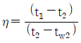
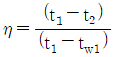
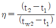
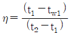
(정답률: 42%)
14. 정방실에 35kW의 모터에 의해 구동되는 정방기가 12대 있을 때 전력에 의한 취득열량(kW)은 얼마인가? (단, 전동기와 이것에 의해 구동되는 기계가 같은 방에 있으며, 전동기의 가동율은 0.74 이고, 전동기 효율은 0.87, 전동기 부하율은 0.92 이다.)
- 483
- 420
- 357
- 329
(정답률: 28%)
15. 보일러의 시운전 보고서에 관한 내용으로 가장 관련이 없는 것은?
- 제어기 세팅 값과 입/출수 조건 기록
- 입/출구 공기의 습구온도
- 연도 가스의 분석
- 성능과 효율 측정 값을 기록, 설계 값과 비교
(정답률: 30%)
16. 다음 용어에 대한 설명으로 틀린 것은?
- 자유면적 : 취출구 혹은 흡입구 구멍면적의 합계
- 도달거리 : 기류의 중심속도가 0.25m/s에 이르렀을 때, 취출구에서의 수평거리
- 유인비 : 전공기량에 대한 취출공기량(1차 공기)의 비
- 강하도 : 수평으로 취출된 기류가 일정거리만큼 진행한 뒤 기류중심선과 취출구 중심과의 수직거리
(정답률: 37%)
17. 증기난방과 온수난방의 비교 설명으로 틀린 것은?
- 주 이용열로 증기난방은 잠열이고, 온수난방은 현열이다.
- 증기난방에 비하여 온수난방은 방열량을 쉽게 조절할 수 있다.
- 장거리 수송으로 증기난방은 발생증기압에 의하여, 온수난방은 자연순환력 또는 펌프 등의 기계력에 의한다.
- 온수난방에 비하여 증기난방은 예열부하와 시간이 많이 소요된다.
(정답률: 50%)
18. 공기조화 시스템에 사용되는 댐퍼의 특성에 대한 설명으로 틀린 것은?
- 일반 댐퍼(Volume Control Damper) : 공기 유량조절이나 차단용이며, 아연도금 철판이나 알루미늄 재료로 제작된다.
- 방화댐퍼(Fire Damper) : 방화벽을 관통하는 덕트에 설치되며, 화재 발생시 자동으로 폐쇄되어 화염의 전파를 방지한다.
- 밸런싱 댐퍼(Balancing Damper) : 덕트의 여러 분기관에 설치되어 분기관의 풍량을 조절하며, 주로 T.A.B 시 사용된다.
- 정풍량 댐퍼(Linear Volume Control Damper) : 에너지절약을 위해 결정된 유량을 선형적으로 조절하며, 역류방지 기능이 있어 비싸다.
(정답률: 54%)
19. 공기조화시 T.A.B 측정 절차 중 측정요건으로 틀린 것은?
- 시스템의 검토 공정이 완료되고 시스템 검토보고서가 완료되어야 한다.
- 설계도면 및 관련 자료를 검토한 내용을 토대로 하여 보고서 양식에 장비규격 등의 기준이 완료되어야 한다.
- 댐퍼, 말단 유닛, 터미널의 개도는 완전 밀폐되어야 한다.
- 제작사의 공기조화시 시운전이 완료되어야 한다.
(정답률: 52%)
20. 강제순환식 온수난방에서 개방형 팽창탱크를 설치하려고 할 때, 적당한 온수의 온도는?
- 100℃ 미만
- 130℃ 미만
- 150℃ 미만
- 170℃ 미만
(정답률: 54%)
2과목: 공조냉동설계
21. 부피가 0.4m3인 밀폐된 용기에 압력 3MPa, 온도 100℃의 이상기체가 들어있다. 기체의 정압비열 5 kJ/kg·K, 정적비열 3 kJ/kg·K 일 때 기체의 질량(kg)은 얼마인가?
- 1.2
- 1.6
- 2.4
- 2.7
(정답률: 39%)
22. 온도 100℃, 압력 200kPa의 이상기체 0.4kg이 가역단열과정으로 압력이 100kPa로 변화하였다면, 기체가 한 일(kJ)은 얼마인가? (단, 기체 비열비 1.4, 정적비열 0.7 kJ/kg·K 이다.)
- 13.7
- 18.8
- 23.6
- 29.4
(정답률: 32%)
23. 70kPa에서 어떤 기체의 체적이 12m3이었다. 이 기체를 800kPa 까지 폴리트로픽 과정으로 압축했을 때 체적이 2m3으로 변화했다면, 이 기체의 폴리트로픽 지수는 약 얼마인가?
- 1.21
- 1.28
- 1.36
- 1.43
(정답률: 29%)
24. 공기 정압비열(CP, kJ/kg·℃)이 다음과 같을 때 공기 5kg을 0℃에서 100℃까지 일정한 압력하에서 가열하는데 필요한 열량(kJ)은 약 얼마인가? (단, 다음 식에서 t는 섭씨온도를 나타낸다.)
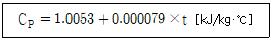
- 85.5
- 100.9
- 312.7
- 504.6
(정답률: 30%)
25. 흡수식 냉동기의 냉매의 순환 과정으로 옳은 것은?
- 증발기(냉각기)→흡수기→재생기→응축기
- 증발기(냉각기)→재생기→흡수기→응축기
- 흡수기→증발기(냉각기)→재생기→응축기
- 흡수기→재생기→증발기(냉각기)→응축기
(정답률: 41%)
26. 이상기체 1kg이 초기에 압력 2kPa, 부피 0.1m3를 차지하고 있다. 가역등온과정에 따라 부피가 0.3m3로 변화했을 때 기체가 한 일(J)은 얼마인가?
- 9540
- 2200
- 954
- 220
(정답률: 28%)
27. 증기터빈에서 질량유량이 1.5kg/s 이고, 열손실율이 8.5kW이다. 터빈으로 출입하는 수증기에 대하여 그림에 표시한 바와 같은 데이터가 주어진다면 터빈의 출력(kW)은 약 얼마인가?
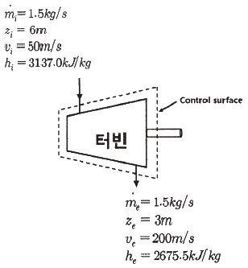
- 273.3
- 655.7
- 1357.2
- 2616.8
(정답률: 33%)
28. 냉동사이클에서 응축온도 47℃, 증발온도 –10℃이면 이론적인 최대 성적계수는 얼마인가?
- 0.21
- 3.45
- 4.61
- 5.36
(정답률: 34%)
29. 압축기의 체적효율에 대한 설명으로 옳은 것은?
- 간극체적(top clearance)이 작을수록 체적효율은 작다.
- 같은 흡입압력, 같은 증기 과열도에서 압축비가 클수록 체적효율은 작다.
- 피스톤 링 및 흡입 밸브의 시트에서 누설이 작을수록 체적효율이 작다.
- 이론적 요구 압축동력과 실제 소요 압축동력의 비이다.
(정답률: 34%)
30. 냉동장치에서 플래쉬 가스의 발생원인으로 틀린 것은?
- 액관이 직사광선에 노출되었다
- 응축기의 냉각수 유량이 갑자기 많아졌다.
- 액관이 현저하게 입상하거나 지나치게 길다.
- 관의 지름이 작거나 관 내 스케일에 의해 관경이 작아졌다.
(정답률: 44%)
31. 프레온 냉동장치에서 가용전에 대한 설명으로 틀린 것은?
- 가용전의 용융온도는 일반적으로 75℃이하로 되어 있다.
- 가용전은 Sn, Cd, Bi 등의 합금이다.
- 온도상승에 따른 이상 고압으로부터 응축기 파손을 방지한다.
- 가용전의 구경은 안전밸브 최소구경의 1/2 이하이어야 한다.
(정답률: 39%)
32. 흡수식 냉동기에 사용되는 흡수제의 구비조건으로 틀린 것은?
- 냉매와 비등온도 차이가 작을 것
- 화학적으로 안정하고 부식성이 없을 것
- 재생에 필요한 열량이 크지 않을 것
- 점성이 작을 것
(정답률: 42%)
33. 클리어런스 포켓이 설치된 압축기에서 클리어런스가 커질 경우에 대한 설명으로 틀린 것은?
- 냉동능력이 감소한다.
- 피스톤의 체적 배출량이 감소한다.
- 체적효율이 저하한다.
- 실제 냉매 흡입량이 감소한다.
(정답률: 30%)
34. 이상기체 1kg을 일정 체적 하에 20℃로부터 100℃로 가열하는데 836kJ의 열량이 소요되었다면 정압비열(kJ/kg·K)은 약 얼마인가? (단, 해당가스의 분자량은 2이다.)
- 2.09
- 6.27
- 10.5
- 14.6
(정답률: 19%)
35. 20℃의 물로부터 0℃의 얼음을 매 시간당 90kg을 만드는 냉동기의 냉동능력(kW)은 얼마인가? (단, 물의 비열 4.2kJ/kg·K, 물의 응고 잠열 335kJ/kg이다.)
- 7.8
- 8.0
- 9.2
- 10.5
(정답률: 27%)
36. 2차유체로 사용되는 브라인의 구비 조건으로 틀린 것은?
- 비등점이 높고, 응고점이 낮을 것
- 점도가 낮을 것
- 부식성이 없을 것
- 열전달률이 작을 것
(정답률: 48%)
37. 카르노 사이클로 작동되는 기관의 실린더 내에서 1kg의 공기가 온도 120℃에서 열량 40kJ를 받아 등온팽창 한다면 엔트로피의 변화(kJ/kg·K)는 약 얼마인가?
- 0.102
- 0.132
- 0.162
- 0.192
(정답률: 33%)
38. 표준냉동사이클의 단열 교축과정에서 입구 상태와 출구 상태의 엔탈피는 어떻게 되는가?
- 입구 상태가 크다.
- 출구 상태가 크다.
- 같다.
- 경우에 따라 다르다.
(정답률: 50%)
39. 온도식 자동팽창밸브에 대한 설명으로 틀린 것은?
- 형식에는 일반적으로 벨로즈식과 다이어프램식이 있다.
- 구조는 크게 감온부와 작동부로 구성된다.
- 만액식 증발기나 건식 증발기에 모두 사용이 가능하다.
- 증발기 내 압력을 일정하게 유지하도록 냉매유량을 조절한다.
(정답률: 30%)
40. 다음 중 검사질량의 가역 열전달 과정에 관한 설명으로 옳은 것은?
- 열전달량은
 와 같다.
와 같다. - 열전달량은
 보다 크다.
보다 크다. - 열전달량은
 와 같다.
와 같다. - 열전달량은
 보다 크다.
보다 크다.
(정답률: 35%)
3과목: 시운전 및 안전관리
41. 고압가스 안전관리법령에 따라 ( ) 안의 내용으로 옳은 것은?
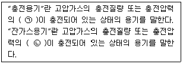
- ㉠ 2분의 1 이상, ㉡ 2분의 1 미만
- ㉠ 2분의 1 초과, ㉡ 2분의 1 이하
- ㉠ 5분의 2 이상, ㉡ 5분의 2 미만
- ㉠ 5분의 2 초과, ㉡ 5분의 2 이하
(정답률: 38%)
42. 기계설비법령에 따라 기계설비 발전 기본계획은 몇 년마다 수립·시행하여야 하는가?
- 1
- 2
- 3
- 5
(정답률: 33%)
43. 기계설비법령에 따라 기계설비 유지관리교육에 관한 업무를 위탁받아 시행하는 기관은?
- 한국기계설비건설협회
- 대한기계설비건설협회
- 한국공작기계산업협회
- 한국건설기계산업협회
(정답률: 38%)
44. 고압가스 안전관리법령에서 규정하는 냉동기 제조 등록을 해야 하는 냉동기의 기준은 얼마인가?
- 냉동능력 3톤 이상인 냉동기
- 냉동능력 5톤 이상인 냉동기
- 냉동능력 8톤 이상인 냉동기
- 냉동능력 10톤 이상인 냉동기
(정답률: 31%)
45. 다음 중 고압가스 안전관리법령에 따라 500만원 이하의 벌금 기준에 해당하는 경우는?
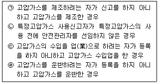
- ㉠
- ㉠, ㉡
- ㉠, ㉡, ㉢
- ㉠, ㉡, ㉢, ㉣
(정답률: 31%)
46. 전류의 측정 범위를 확대하기 위하여 사용되는 것은?
- 배율기
- 분류기
- 저항기
- 계기용변압기
(정답률: 37%)
47. 절연저항 측정 시 가장 적당한 방법은?
- 메거에 의한 방법
- 전압, 전류계에 의한 방법
- 전위차계에 의한 방법
- 더블브리지에 의한 방법
(정답률: 51%)
48. 저항 100Ω의 전열기에 5A의 전류를 흘렀을 때 소비되는 전력은 몇 W 인가?
- 500
- 1000
- 1500
- 2500
(정답률: 40%)
49. 유도전동기에서 슬립이 “0”이라고 하는 것은?
- 유도전동기가 정지 상태인 것을 나타낸다.
- 유도전동기가 전부하 상태인 것을 나타낸다.
- 유도전동기가 동기속도로 회전한다는 것이다.
- 유도전동기가 제동기의 역할을 한다는 것이다.
(정답률: 43%)
50. 논리식 중 동일한 값을 나타내지 않는 것은?
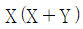
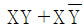
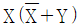
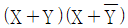
(정답률: 43%)
51. it = Im sinwt 인 정현파 교류가 있다. 이 전류보다 90° 앞선 전류를 표시하는 식은?
- Im coswt
- Im sinwt
- Im cos(wt+90°)
- Im sin(wt-90°)
(정답률: 33%)
52. i = Im1 sinwt + Im2 sin(2wt+θ)의 실효값은?
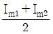
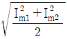
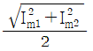
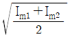
(정답률: 34%)
53. 그림과 같은 브리지 정류회로는 어느 점에 교류입력을 연결하여야 하는가?
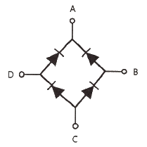
- A-B점
- A-C점
- B-C점
- B-D점
(정답률: 42%)
54. 추종제어에 속하지 않는 제어량은?
- 위치
- 방위
- 자세
- 유량
(정답률: 42%)
55. 직류·교류 양용에 만능으로 사용할 수 있는 전동기는?
- 직권 정류자 전동기
- 직류 복권 전동기
- 유도 전동기
- 동기 전동기
(정답률: 27%)
56. 배율기의 저항이 50kΩ, 전압계의 내부 저항이 25kΩ이다. 전압계가 100v를 지시하였을 때, 측정한 전압(V)은?
- 10
- 50
- 100
- 300
(정답률: 26%)
57. 아래 그림의 논리회로와 같은 진리값을 NAND소자만으로 구성하여 나타내려면 NAND소자는 최소 몇 개가 필요한가?
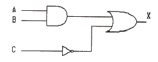
- 1
- 2
- 3
- 5
(정답률: 38%)
58. 궤환제어계에 속하지 않는 신호로서 외부에서 제어량이 그 값에 맞도록 제어계에 주어지는 신호를 무엇이라 하는가?
- 목표값
- 기준 압력
- 동작 신호
- 궤환 신호
(정답률: 34%)
59. 그림과 같은 전자릴레이회로는 어떤 게이트 회로인가?
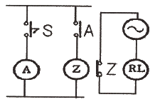
- OR
- AND
- NOR
- NOT
(정답률: 27%)
60. 제어량에 따른 분류 중 프로세스 제어에 속하지 않는 것은?
- 압력
- 유량
- 온도
- 속도
(정답률: 38%)
4과목: 유지보수 공사관리
61. 급수배관 시공 시 수격작용의 방지 대책으로 틀린 것은?
- 플래쉬 밸브 또는 급속 개폐식 수전을 사용한다.
- 관 지름은 유속이 2.0~2.5m/s 이내가 되도록 설정한다.
- 역류 방지를 위하여 체크 밸브를 설치하는 것이 좋다.
- 급수관에서 분기할 때에는 T 이음을 사용한다.
(정답률: 35%)
62. 다음 중 사용압력이 가장 높은 동관은?
- L관
- M관
- K관
- N관
(정답률: 46%)
63. 공조설비 중 덕트설계시 주의사항으로 틀린 것은?
- 덕트 내 정압손실을 적게 설계할 것
- 덕트의 경로는 가능한 최장거리로 할 것
- 소음 및 진동이 적게 설계할 것
- 건물의 구조에 맞드록 설계할 것
(정답률: 52%)
64. 가스배관 시공에 대한 설명으로 틀린 것은?
- 건물 내 배관은 안전을 고려, 벽, 바닥 등에 매설하여 시공한다.
- 건축물의 벽을 관통하는 부분의 배관에는 보호관 및 부식방지 피복을 한다.
- 배관의 경로와 위치는 장래의 계획, 다른 설비와의 조화 등을 고려하여 정한다.
- 부식의 우려가 있는 장소에 배관하는 경우에는 방식, 절연조치를 한다.
(정답률: 46%)
65. 증기배관 중 냉각 레그(cooling leg)에 관한 내용으로 옳은 것은?
- 완전한 응축수를 회수하기 위함이다.
- 고온증기의 동파 방지시설이다.
- 열전도 차단을 위한 보온단열 구간이다.
- 익스팬션 조인트이다.
(정답률: 35%)
66. 보온재의 구비조건으로 틀린 것은?
- 표면시공이 좋아야 한다.
- 재질자체의 모세관 현상이 커야 한다.
- 보냉 효율이 좋아야 한다.
- 난연성이나 불연성이어야 한다.
(정답률: 51%)
67. 신축 이음쇠의 종류에 해당하지 않는 것은?
- 벨로즈형
- 플랜지형
- 루프형
- 슬리브형
(정답률: 38%)
68. 고압 증기관에서 권장하는 유속기준으로 가장 적합한 것은?
- 5~10m/s
- 15~20m/s
- 30~50m/s
- 60~70m/s
(정답률: 31%)
69. 증기난방의 환수방법 중 증기의 순환이 가장 빠르며 방열기의 설치위치에 제한을 받지 않고 대규모 난방에 주로 채택되는 방식은?
- 단관식 상향 증기 난방법
- 단관식 하향 증기 난방법
- 진공환수식 증기 난방법
- 기계환수식 증기 난방법
(정답률: 43%)
70. 온수난방 배관 시 유의사항으로 틀린 것은?
- 온수 방열기마다 반드시 수동식 에어벤트를 부착한다.
- 배관 중 공기가 고일 우려가 있는 곳에는 에어벤트를 설치한다.
- 수리나 난방 휴지시의 배수를 위한 드레인 밸브를 설치한다.
- 보일러에서 팽창탱크에 이르는 팽창관에는 밸브를 2개 이상 부착한다.
(정답률: 48%)
71. 강관에서 호칭관경의 연결로 틀린 것은?
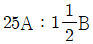
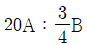
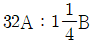
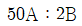
(정답률: 31%)
72. 펌프주위 배관에 관한 설명으로 옳은 것은?(문제 오류로 가답안 발표시 3번으로 발표되었지만 확정답안 발표시 2, 3번 정답 처리 되었습니다. 여기서는 가답안인 3번을 누르면 정답 처리 됩니다.)
- 펌프의 흡입측에는 압력계를, 토출측에는 진공계(연성계)를 설치한다.
- 흡입관이나 토출관에는 펌프의 진동이나 관의 열팽창을 흡수하기 위하여 신축이음을 한다.
- 흡입관의 수평배관은 펌프를 향해 1/50~1/100의 올림구배를 준다.
- 토출관의 게이트밸브 설치높이는 1.3m 이상으로 하고 바로 위에 체크밸브를 설치한다.
(정답률: 45%)
73. 중·고압 가스배관의 유량(Q)을 구하는 계산식으로 옳은 것은? (단, P1 : 처음압력, P2 : 최종압력, d : 관 내경, l : 관 길이, s : 가스비중, K : 유량계수 이다.)
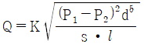
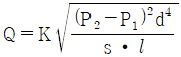
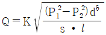
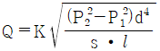
(정답률: 31%)
74. 보온재의 열전도율이 작아지는 조건으로 틀린 것은?
- 재료의 두께가 두꺼울수록
- 재질 내 수분이 작을수록
- 재료의 밀도가 클 수록
- 재료의 온도가 낮을수록
(정답률: 38%)
75. 다음 중 증기사용 간접가열식 온수공급 탱크의 가열관으로 가장 적절한 관은?
- 납관
- 주철관
- 동관
- 도관
(정답률: 44%)
76. 펌프의 양수량이 60m3/min이고 전양정이 20m일 때, 벌류트 펌프로 구동할 경우 필요한 동력(kW)은 얼마인가? (단, 물의 비중량은 9800 N/m3이고, 펌프의 효율은 60%로 한다.)
- 196.1
- 200.2
- 326.7
- 4⑤.8
(정답률: 29%)
77. 다음 중 주철관 이음에 해당되는 것은?
- 납땜 이음
- 열간 이음
- 타이튼 이음
- 플라스턴 이음
(정답률: 34%)
78. 전기가 정전되어도 계속하여 급수를 할 수 있으며 급수오염 가능성이 적은 급수방식은?
- 압력탱크 방식
- 수도직결 방식
- 부스터 방식
- 고가탱크 방식
(정답률: 45%)
79. 도사가스의 공급설비 중 가스 홀더의 종류가 아닌 것은?
- 유수식
- 중수식
- 무수식
- 고압식
(정답률: 37%)
80. 강관의 두께를 선정할 때 기준이 되는 것은?
- 곡률반경
- 내경
- 외경
- 스케줄번호
(정답률: 37%)
유효온도(ET)는 인체가 느끼는 온도를 나타내는 지표로, 온도와 상대습도, 바람의 속도 등을 고려하여 계산됩니다. 복사의 영향은 고려하지 않습니다.
수정유효온도(CET)는 유효온도(ET)에서 복사의 영향을 고려하여 계산한 지표입니다.
작용온도(OT)는 인체의 신체적 활동 수준에 따라 변화하는 온도를 나타내는 지표입니다. 복사의 영향은 고려하지 않습니다.
따라서, 복사의 영향을 고려하지 않는 온열환경지표는 유효온도(ET)입니다.